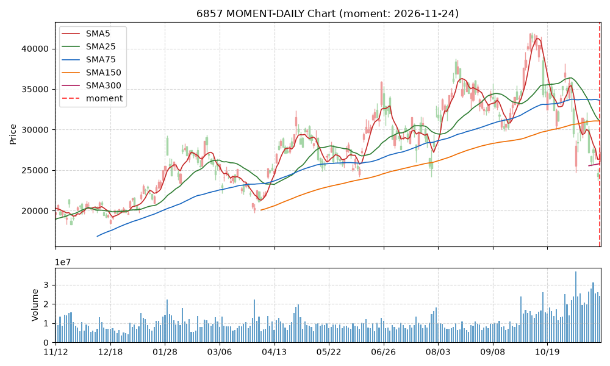
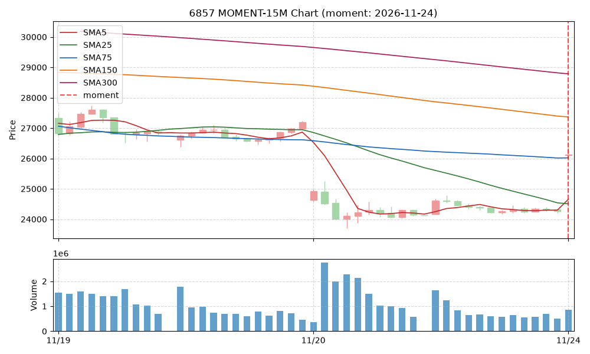
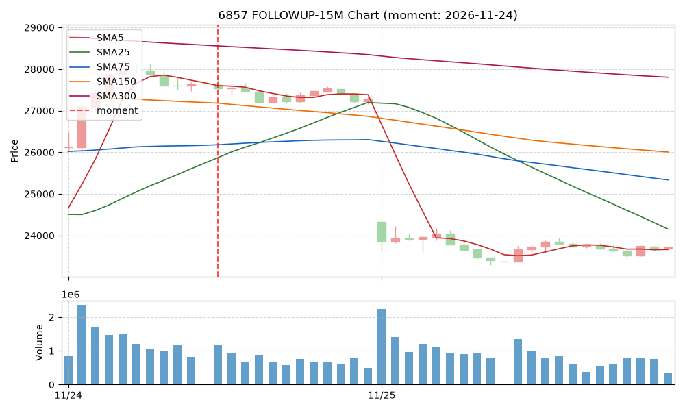

6857 アドバンテスト
1. 概要＆チャート
方向: 買い
日時: 2026-11-24 09:15 JST
価格: 26500.0



2. 当時の状況
日足
| SMA | 値 | 傾き | 300との乖離率 |
|---|---|---|---|
| 5 | 26342.0 | -4.6% | 2.3% |
| 25 | 31336.0 | -1.3% | 21.7% |
| 75 | 33673.5 | -0.1% | 30.8% |
| 150 | 31062.5 | -0.0% | 20.7% |
| 300 | 25739.6 | 0.2% | 0.0% |
終値の乖離率（SMA300 との）: -5.8%
15分足
| SMA | 値 | 傾き | 300との乖離率 |
|---|---|---|---|
| 5 | 24656.0 | 1.5% | -14.3% |
| 25 | 24505.2 | -0.1% | -14.9% |
| 75 | 26018.9 | 0.0% | -9.6% |
| 150 | 27365.8 | -0.1% | -4.9% |
| 300 | 28786.3 | -0.1% | 0.0% |
終値の乖離率（SMA300 との）: -9.3%
- 調査 2026-11-24 09:15 JST 背景: 前週末までの半導体急落（11/20: SOX -10.7%、日経平均 -5.06%、当銘柄 -10.3%）は、11/23（米国時間）にNVIDIAがジェンスン・ファン氏をCEOに即時復帰させたことをきっかけに急反転し、米国は歴史的リバウンド（S&P500 +4.73%、ナスダック +6.51%、NVDA +31%、SOX +14%前後、テラダイン +14%）。当銘柄ADR（ATEYY）も+15〜18%、涵養価格26,100〜26,400円＝前週末終値24,255円比+8〜9%で、本日寄り（26,115円）はこの流れを受けたギャップアップスタート。ただしSECのNVIDIA会計調査・対中輸出規制は未解決、12月FOMCの0.25%利上げ観測は96%。 出典: web調査: 日経・CNBC・ロイター・Investopedia・JPX公式（2026-11-23〜24）
- 裏取り 2026-11-24 18:00 JST エントリー理由の実データ検証。①「24000前後で2度サポート」→ 該当は2026/6/11（安値24,150→終値25,175）と7/29（安値24,135→終値25,200）。ただし同ゾーンは1〜3月にも複数回触れた末に3月末で下抜けし、年初来安値19,720円（3/31）を付けた過去がある。②「前日と合わせ大きな下ひげ」→ 11/20（安値23,690）と11/24（始26,115/高28,170/安26,000/終27,275）の2日合成で成立。ただし本日は24,000円台の再テストなし。③「15分足75MAサポート」→ 寄り時点SMA75=26,019〜26,034、最初の2バーの安値26,000/26,010がSMA75に着地して反発、終日SMA75を終値で割らず。④「前回高値32000」→ 下落前の直近高値は11/13の32,130円で正確。⑤寄り値は26,115円で、26,500円の約定は9:15〜9:30のバー内（記録時刻を09:15に修正）。 出典: JQuants 日足（2025-10〜2026-11-24）・yfinance 15分足（2026-11-24 引けまで）
3. 判断
- 記憶 2026-11-24 09:15 JST 24000前後のラインで過去2度サポートされたのを期待。前日と合わせると大きな下ひげになる。15分足75MAにサポートされて前回高値32000を試すと見ている
- 記憶 2026-11-24 09:15 JST 約定は寄り直後の9:15〜9:30頃。寄り値26,115円に対し、15分足75SMAバウンド後の加速の中で26,500円を通過した際に1枚（100株）を執行。 出典: ユーザー確定発言（2026-11-24）＋yfinance 15分足
4. 反省

判定: 違ってた
- 記憶 2026-11-25 09:00 JST 11/25 09:00 寄りで 100 株クローズ（寄り値 24,325）。損益 -217,500円 / -8.17%。 出典: ユーザー確定発言（2026-11-25）＋JQuants/yfinance 寄り値
- 記憶 2026-11-25 17:45 JST 自分で決めたトレンドルールを破ってニュースで飛び乗り、痛い目にあった典型例。2度とリバウンドに飛びつかないと誓う。 出典: ユーザーの反省発言（2026-11-25）